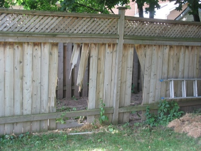

Delphine loves to know whether things are real or pretend,
so after a lengthy discussion about ghosts (starting with
"what do ghosts eat?") she changed the subject:
"Are dinosaurs real?"
"Not any more. They're all dead."
"Why are they all dead?"
"Well, that's a good question." (The lovely thing about
having children is that you can occasionally answer questions
with that without meaning "I don't know.") I then
took a big breath, about to explain the asteroid theory
(because who doesn't love the idea of a flaming rock flying
at us from space?) when Delphine advanced her own theory.
"Maybe they're all dead because people took the bones out
of them to put in museums."
I am sure I have read a book in the last six months. Maybe
even two or three. Now that the reno is over I have run out
of excuses for not reading, so here goes.
According to my notebooks I read Born To Buy: The
Commercialized Child and the New Consumer Culture by
Juliet Schor and there wasn't much in there that I
didn't know; companies spend billions marketing all kinds
of products to children. I was creeped out by the use
of viral and peer-to-peer marketing — using kids to sell
stuff to their friends. The other annoying thing is the
way marketing and consumer culture loves to position
parents as dorky ineffectual losers who should be ignored
as much as possible.
Also worth noting is the connection between immersion in
consumer culture and depression in children. One of the
great things my parents did for me (although not entirely
intentionally) was shelter me from consumer culture to a
large entent, partially by not having TV (or not having
cable) and partially just because we couldn't afford lots
of toys so we mostly found our fun in books from the
library and plenty of public radio. Good geeky fun.
Kids Are Worth It: Raising Children to be Responsible,
Resourceful, Caring Individuals by Barbara Coloroso
is a book I read because it's often quoted in the parenting
magazines, and it seemed like one of those books I ought to
read. And I'm really glad I did; it crystallized a lot of
the vague parenting philosophies I'd had and gave me lots of
ideas and structure for how to implement them: how to treat
my kids with respect, how to provide consequences, how to
discipline. Coloroso is a great resource for a frazzled
mum because she gives you lots of bulleted lists and
mnemonics so you can recall her advice in moments of stress.
Which are most of them, really.
Alright, I've read more than two books in the last six
months but now the stupid (I mean lovely) baby is awake
so you'll have to wait another six months for my next
post. Adios!
Here's a picture: Painful evidence that a Central
Fairbanks Lumber truck does not, in fact, and to the great chagrin of
our contractor, fit down our back lane.
Oh, and: that's not our fence. That's our neighbour's fence. And
they have a dog which they can now not let out until we fix their
fence. Off to buy some wine and flowers...
A friend of
mine (or more accurately, his parents) recently offered us an
air-conditioner. A most welcome addition, given the silly heat levels
we’ve been experiencing, and the complete lack of any cooling
facilities in our house. But that left me with the problem of how to
get it from their house to ours. I could probably have carried it,
although it would have been really tough. I might have been able to
borrow a bike trailer from someone (or fit it into the kid’s bike
trailer (more on that in an upcoming post), but I didn't really know
who, or where, and I kind of wanted to get it over here and hooked up
fairly quickly. Fortunately, I remembered that I had seen a
skateboard amongst some old garbage a block away from my house, so I
walked over, and grabbed it.
Now, in my younger days, I used to be quite the ‘boarder. Okay, I
was never really that good at getting air, but I had no problems
getting around on it. So I thought I’ld give it another try. The
first push went well, and I glided along for a couple of meters,
before hopping off, feeling a little silly. I walked to the end of my
street, and then thought about how cool it would look to cruise up to
the front door on the skateboard, so I put it down, and hopped on.
But this time, my front foot was facing forwards instead of sideways,
and when I tried to turn it (in Birkenstocks!), it sort of didn’t, and
back I went, landing flat on my ass, elbows, and shoulderblades. I’m
fairly sure I didn’t hit the back of my head, at least not too hard,
and it was more my pride that was damaged than anything else, although
the muscles on the front of my neck are really rather sore. It did,
however, answer one important question. I’ve still got “it”, it’s
just been packed away and put in the basement, perhaps to be brought
out and given to my children in a couple of years.
Recently, I've been reading a few books by Robin Williams (the
author, not the actor) about designing for print, and for the web.
One of the things she mentions is that centering looks a little bland,
corporate, boring, and you should instead attempt to align things to
the left or the right. So I took a few minutes tonight to attempt to
do that with the blog, aligning the stories on the right, mirroring
the strong line of the sidebar, which has changed to left-alignment.
I also changed the boxes to lines on the aligned side. I'ld love to
hear what you think, if you noticed at all. (I'm leaving the colour
scheme to Amy. A large part of design is knowing your
limitations.)
This started off as a response to Greg's post,
but grew too long, so I figured I'ld put it here instead.
The reaction I've seen from the developer community to Apple's "iPhone
Development" announcement has been poor at best. Everyone seems to think
that it's a cop-out, and that they should have just said "We don't support
third-party development, but you can use the web." My favourite quote has
to be from John Gruber:
If all you have to offer is a shit sandwich,
just say it. Don't tell us how lucky we are and that it's going to taste
delicious.
Maybe it's because I'm an old fuddy-duddy, but I
don't think the Web 2.0 development is really the wave of the future. I
think the future, like the past, will have desktop apps, client-server apps
with both thick and thin clients, where the server may be a web server or
may not, etc, etc...
And Javascript is still missing the extreme number of useful libraries
that the other three languages have. Like Calvin Spealman says:
Does syntax alone make a language?
Maybe one day it could, but those days died out. Python is far more than
its clean, beautiful syntax. The libraries that come in the standard
library provide even more value. As a foundation for all the software built
on top, these packages are fundamental to the success of
Python.
and I find that to be true over and over again. Java
the language kind of sucks. But the huge number of libraries to do just
about anything I want really rocks. (And the IDEs are sweet too, which is
a good thing, since trying to write Java without an IDE would give even a
super-robot a serious case of carpal tunnel syndrome.)
Which is not to say that there won't be more and more libraries shipped
with Javascript, but then again, since it's mainly a web-language, the
browser makers will want to keep it light, and so the libraries won't be
part of the language proper, as they are with Python or Java, and any
"standard" library you see will be vendor-specific, just like it is today.
(I already write some Javascript scripts for my day job, but I know that
they're going to run on a Windows box. I have no idea how to write the
cross-platform equivalent of stuff like:
if ( FS.FileExists( flavour + "\\gamelist.txt" ) )
or:
WScript.Echo( "Unhandled folder: " + fname );
much less:
var WSHShell = WScript.CreateObject("WScript.Shell");
var cmdline = "jar.exe xvf " + item + " META-INF/MANIFEST.MF";
WSHShell.Run( cmdline, ActivateAndHide, true );
Any suggestions?
And while I'm here, that red "J" was the best thing I could come up with
for a Javascript logo, after extensive web searching. (There's a reason
I'm a programmer, and not a graphics person.) Anyone seen anything
better?
Delphine says "Do you remember when I was three (free) but
not even three and a half and we lived in the old house..."
Or, while we were in the middle of the reno, "...and we
were not renovating" Ah, the good old days when we were not
renovating.
We finally managed to drag the electric piano upstairs and
the girls love it; Cordelia just bashes away but Delphine
would really like to play properly. I am going to see if
there are decent piano lessons available for four-year-olds.
In the meantime, though, she calls the high notes "light"
and the low notes "dark"; synaesthesia or just good sense?
Delphine Watches TV
Sometime in the last six months, Delphine has gone from a
little kid who almost never watches TV to a little kid who
habitually watches one or two shows every day. It started
after we moved, when the house was littered with choking
hazards, falling hazards, breaking hazards and general
getting in the way hazards and the TV was a handy way
of keeping Delphine happy in one place. Since then we
just haven't seemed to phase it out, and now I let her
watch a couple of shows when Cordelia is napping.
Delphine doesn't like anything with any kind of, how to
put this... conflict. She is still very easily scared
so we stick with shows where the conflict is mainly
inter-personal or internal -- Max can't find his monster
mask; Franklin needs help tying knots. Even still,
she hides her head in the couch for the scary bits of
Franklin and the Thunderstorm.
So we watch Franklin (love that theme music!),
Max and Ruby (but it's just not the same now that
Samantha Morton isn't voicing Ruby), Timothy Goes To
School, and of course Charlie and Lola, which
I love because it's so very very English and I'm a big ol'
Anglophile. If you can be a -phile of what you are, anyway.
I was out inspecting my garden this afternoon and I found that
two of my zucchini mounds are growing little seedlings! I
realize growing zucchini is not normally considered an accomplishment,
but it's the first of the things I have put into this garden that
has actually grown, so I am fairly pleased with myself. Especially
considering I caught a squirrel on one of the mounds munching on
a snack of zucchini seeds a couple of days after I planted them.
There's also a couple of things coming up where I planted the
sunflower seeds. I'm not sure if they're sunflowers, but they
were cute and hearty so I left them.
In other news, the latest thing the maple tree is flinging at
us is little green caterpillars. Oh, and we have
golden dung
flies, which are really pretty cool as bugs go, apart
from the obvious dung implication. Stupid neighbour's dogs.
Since it was such a nice day today, I rode home a little slower
than I otherwise would, and it was really nice. I talked to a
woman biking along holding on to another bicycle beside her
(apparently it's not as hard as it looks), and a man who took a
shorter route to Summerhill and MacLennen than I do. People seem
really nice to each other when they're on bicycles...
While I was cycling east along Gerrard, I noticed several police
motorcycles blocking the bike lane. The cops were more than happy
to wave me through, but does anyone know why there were there?
And finally, the interesting thing. On Merton, I was biking
fairly closely behind a car (but slowly, because there are a lot of
speed bumps), when they hit the brakes and turned right into a
parking spot. I grabbed my front brake hard to slow down, and it
went *ping* and offered no resistance. So I hit my back brake, and
slowed right down, but apparently when I grabbed my front brake I
snapped the cable! First time I've ever done that, and it was kind
of exciting in a "I don't really want to do that again" kind of way.
I got to the local bike shop (Sport Swap, now just south of Bayview
and Davisville! Sadly the new location didn't make it into the 2007
Bike Map, which lists the old location (now a Trek Store), so I
figured I'ld throw the info here, since they've been really nice to
me.) Uh, anyways, where was I? Oh, yeah, I got to the local bike
shop just after they closed, so I couldn't get it fixed tonight, but
fortunately, there's a breakfast at The Bike Joint (290A Harbord St.)
tomorrow, which I think I can make it to using only my rear brake,
and I'm sure they'll be able to get me rolling again.
I was in the garden this morning hanging out some washing. It's
a nice sunny day and the kids were enjoying themselves in the
garden, so I decided I would water the plants (as per
J'Anne's advice, and the strawberry was looking a little limp). I
know midday is not the ideal time to water plants, but when you
have little kids you go to war with the schedule you have, not the
schedule you want.
First, though, I cleaned up a dog poo in my garlic patch. (Must
see about getting fences on the back and front.) After I watered,
I was pulling up weeds around the garlic and cherry tomatoes
when I saw two more dog poops, and then immediately was stung
by a huge stinging nettle plant growing merrily by the maple
tree.
So I gave up, rounded up the children and we're going to stay
in the safe, cool, low-UV poop-free (mainly) indoors for the rest of
the day. And I will figure out how to tackle the nettles.
Unless we go to Starbucks.
{kind=link}
{kind=link}